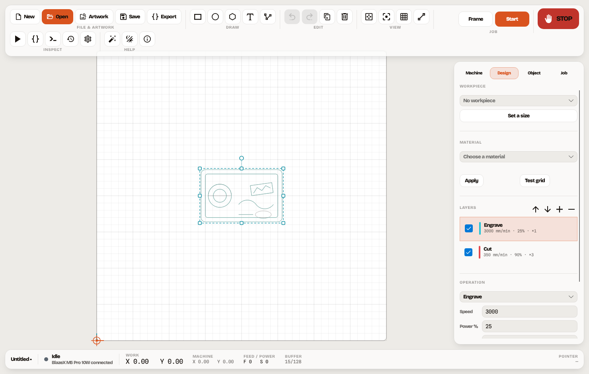
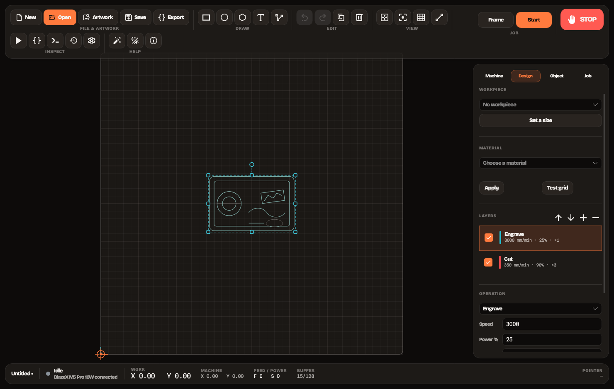
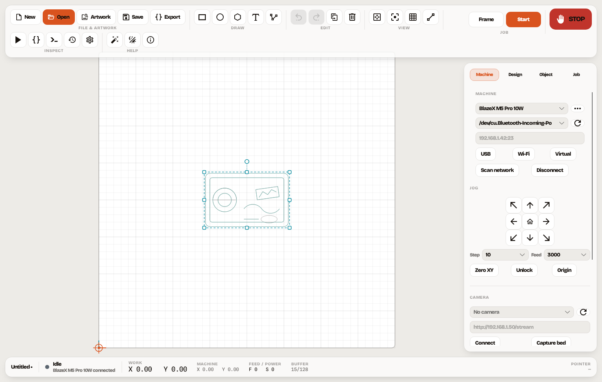
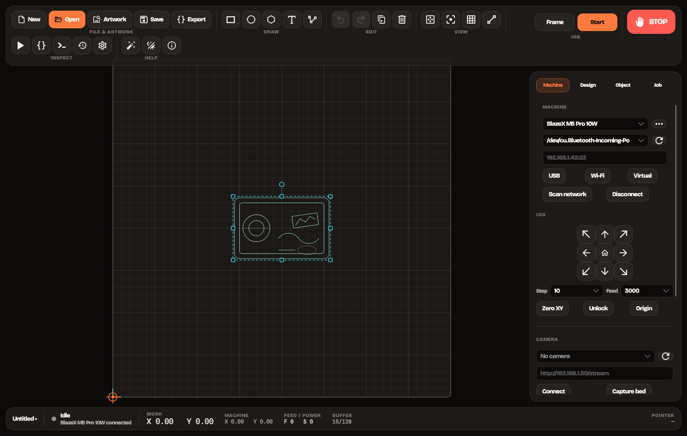
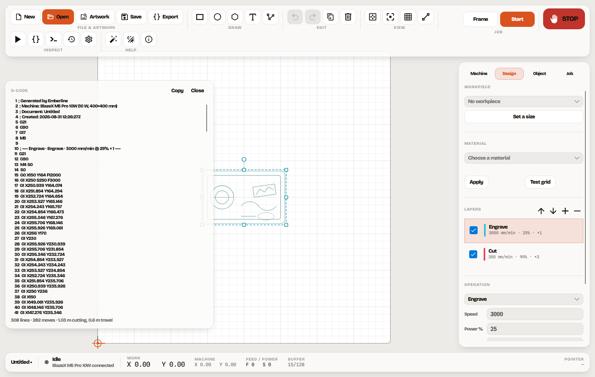
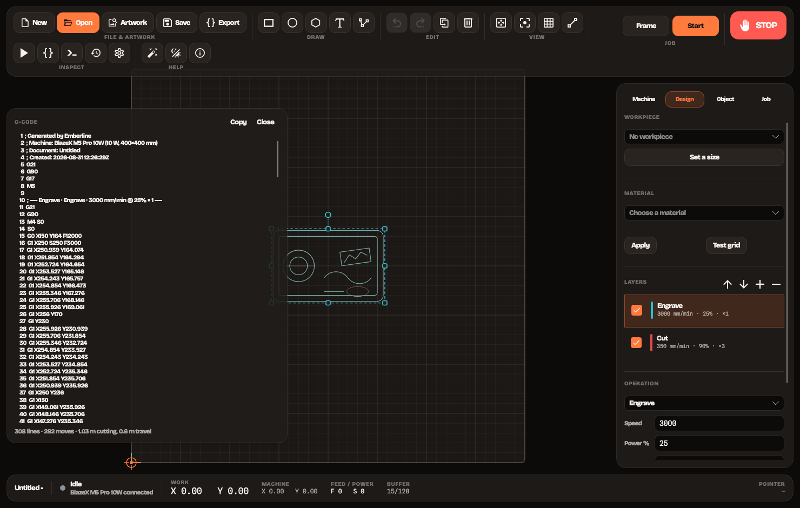
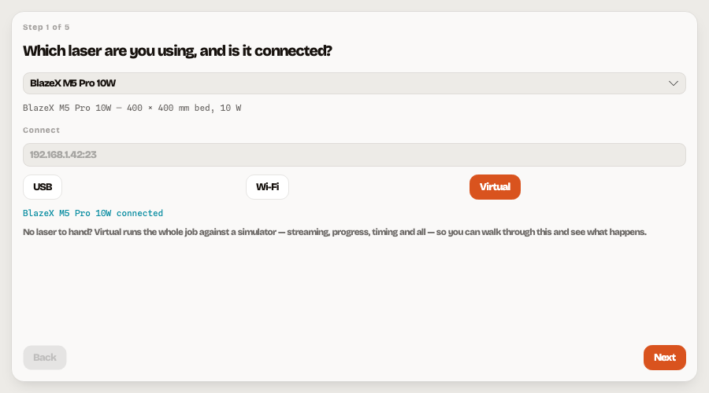
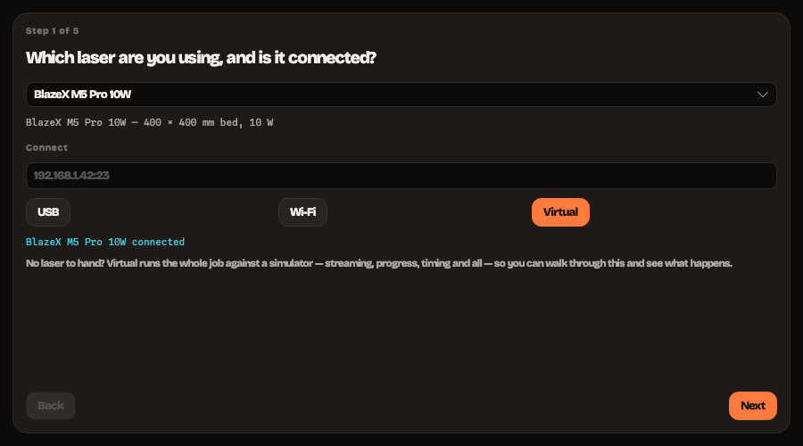

Windows · macOS · Linux · GPLv3
Open-source laser cutting and engraving.
A desktop application for designing, positioning, engraving and cutting with GRBL-compatible machines. It exists because the good open-source option is Windows-only and speaks nothing but USB serial, and the good cross-platform option is proprietary.
This drives a laser
A laser powerful enough to mark wood is powerful enough to set it alight and start a fire that spreads while you are looking at a screen. Never leave a running machine unattended, extract the fumes, wear eye protection rated for your wavelength, and treat the stop button in the application as a convenience rather than a safety device — the switch on the machine is the one that counts.
Provided as is, without warranty of any kind. Use entirely at your own risk. No release so far has completed a job on real hardware. Preview the toolpath, frame the outline at pointer power, and start from settings you have tested on an offcut.


The workspace
The bed, not a file browser.
The machine bed fills the window and every panel floats over it. Drag, scale and rotate on the canvas, snap and align, group and array — with undo across all of it. Layers carry their own speed, power and pass count, so one design can cut and engrave in a single job.
Millimetres everywhere, Y up. Inches exist only in the view layer.


Connection
USB, Wi-Fi, or nothing at all.
Serial, TCP, WebSocket and HTTP, plus an opt-in network scan that probes for GRBL controllers. Nothing above the transport knows what it is talking to, so the job engine drives a USB cable, a WebSocket and the simulator through one code path.
Discovery uses $I only. A soft reset would find more controllers and end somebody's job doing it.


Nothing hidden
The exact lines that will be sent.
Every job can be read before it runs, simulated with a scrubber, and framed at pointer power so the head traces the outline on the real material first. Time estimates are acceleration-aware rather than a length divided by a feed rate.
Streaming keeps GRBL's 128-byte buffer full by character count, so the planner never starves and raster engraves do not band.


First time
If you have never used a laser.
Five steps: which machine, what is on the bed, what you are burning onto it, how hard and how fast, and a check of the result. It sets up the same objects the panels do, so nothing it does is trapped inside the wizard.
It stops short of starting the job. Pressing Start is a decision to take while looking at the bed, not at a dialog.
What is in it
Built for the whole job.
From the artwork landing on the bed to the last line acknowledged by the controller.
Try it without a laser
A complete in-process GRBL 1.1 controller — receive buffer, planner queue, status reports, alarms and soft limits. The same simulator the test suite runs jobs against.
Import
SVG with nested transforms and real-world sizing, DXF with bulges and splines, PNG, JPEG, BMP, GIF, WebP, and existing G-code.
Photo engraving
Invert, brightness, contrast, gamma, sharpen, tone clipping and twelve dithering kernels — with a live preview of what will actually burn.
Raster and vector CAM
Engrave, score and cut; hatch and offset fills; text to outlines. Overlapping shapes are cut as their combined outline, with holes preserved.
Tracing
Bitmap to paths with a live preview — outlines or centrelines, threshold seeded from the image itself, simplify and smooth.
Camera
MJPEG and HTTP snapshot sources, lens and perspective correction, bed overlay, workpiece detection, fiducial re-registration, and a live view while a job runs.
Materials
A library keyed by laser wattage with hazard warnings — and a test grid that burns a power-versus-speed matrix so you get numbers true for your machine.
Artwork search
150-odd open icon sets, around 200,000 shapes, with the licence shown against every result. Import to etch, or import to cut.
Recovery
Pause, resume and stop; resume-from-line after a dropped link; and every job recorded locally with its settings, so "what worked last time" is answerable.
Rotary
Roller and chuck attachments, with the axis rescaled from the real steps-per-millimetre rather than a guess.
Controller settings
A $ editor with every value named, explained and unit-labelled, and confirmation on the ones that can drive a machine into itself.
An assistant that cannot move the machine
Optional help with settings, faults and job setup. It can draw, and it can propose — it has no method that starts, jogs or homes anything. That is architectural, not a prompt rule.
Latest release — v0.1.0
Download.
Self-contained builds. The .NET runtime is bundled, so there is nothing to install first.
Or build it
# needs the .NET 10 SDK
git clone https://github.com/justynroberts/emberline
cd emberline
dotnet run --project src/Emberline.App